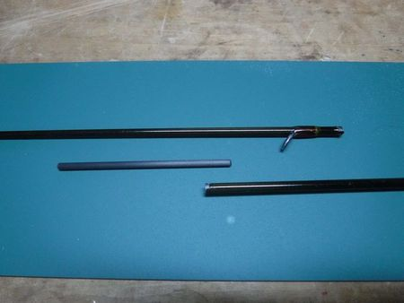
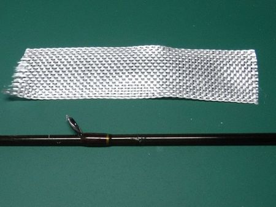
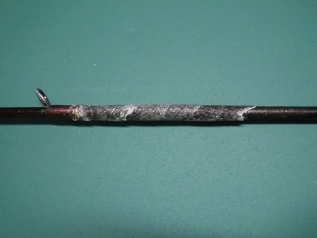

ティップス
折ったロッドの修理
先週、枝に掛かったルアーを回収しようと、不用意にロッドをあおったら、ポキンと折れた。あまりにもシロウティー。(泣)
新品はもとより、ティップセクションすら買うお金も無いので、帰りがけに釣り具店に寄り、印籠継ぎ用のソリッドカーボン、径3mm を買ってきた。300円。

印籠継ぎ用のソリッドカーボン、径3mm
テーパーの細い側をサンドペーパーで削り、径を小さくするとピッタリ！ 削る感覚が、鉛筆の芯そっくり。(笑)
瞬間接着剤では、位置決めがうまく行かないと思ったので、ボンドのクリアで慎重にガイドの位置を見ながら接着。仕上げにダイソーのマニキュア・クリアを塗って修理完了。
昨日の釣行では、どこを折ったの？ と思えるくらいに快調に使えた。無いものは作る。壊れたものは直す。NZで学んだこと。
しかし、先週、折った後でスペアとして使った80年代後半のスピニングロッドと思うと、確かに隔世の感がある。でも、ナイロンの糸と、ああしたダヨンダヨンのロッドで釣るのも、味があって良いし、釣り人の腕が分かるかなと思った次第。
そんな腕は無いけれど。うどん屋の釜。湯うだけ。(笑)
追記：前回応急処置の後、T先輩のアドバイス：「上記の修理方法では、突然、再びポキッと折れることがある！」に従い、周辺をエポキシ接着剤とグラスファイバーテープにて補強した。

ラジコン飛行機作成用のグラスファイバーテープ（非粘着タイプ）
手順を間違え、テープを巻く前にドライヤーでエポキシ接着剤を暖めたので、トロトロになりすぎて出来上がりが不細工になった。けば立ちをカミソリで整形し、細目のサンドペーパーをかけた。
後は、ロッドビルディング用の黒い塗料を塗って完成。これで50cm 級まで大丈夫。（笑）

黒い塗料を塗る前。これで50cm 級まで大丈夫。
人が見たら卒倒しそうな出来映えだが、これで良し。(^_^;)
2024/01/28
ティップス 目次へ
サイトマップ
ホームへ
お問い合わせ